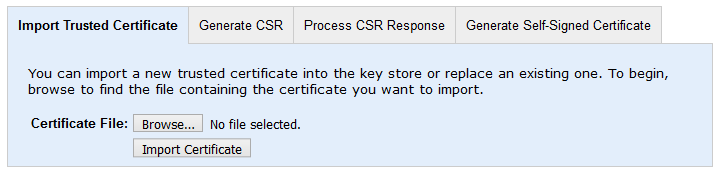
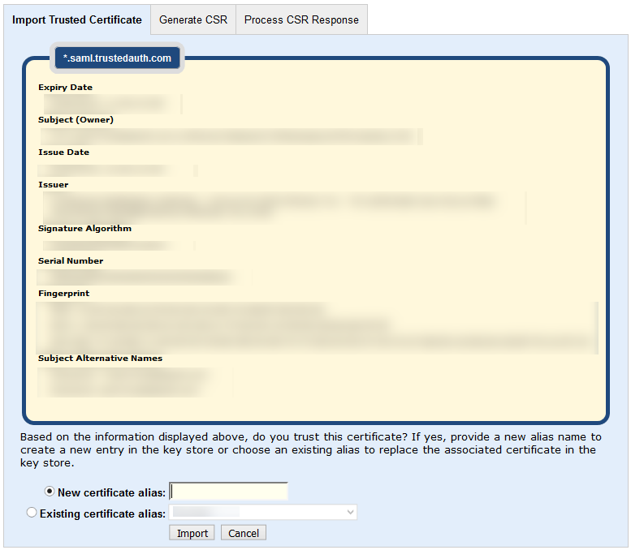

|
IdentityGuard Server 12.0 Administration Guide |
|
IdentityGuard Server 12.0 Administration Guide |
Use the following procedure to add a new certificate to the Key Store or replace one that is about to expire with a new one.
Among the scenarios in which you would use this procedure is the case of importing the Self-Service Module's tomcat certificate into the Entrust IdentityGuard server key store as part of configuring transaction verification (with mobile soft tokens) or identity-assured operations (with mobile smart credentials).
To import a trusted certificate
1. Log in to the Administration interface.
2. From the top menu, select System, and then click the Key Store Management tab.
3. Near the bottom of the page, click the Import Trusted Certificate tab.
4. Click Browse.

5. Browse to the location of the certificate you want to import, select it, and then click Open. The file name is displayed to the right of the browse button on the Import Trusted Certificate tab.
6. Click Import Certificate. The certificate details are displayed.

7. If you are importing a new certificate, enter a meaningful name in the New certificate alias text box.
OR
If you are importing an updated version of a certificate that was already in your key store, select Existing certificate alias and then select the existing alias from the drop-down list.
8. Review the details to ensure they match what you expect. Check whether the owner and issuer DN values look correct, and if you are concerned, try to check the validity of the certificate fingerprint with a definitive, trusted source. If the information is correct and you trust the certificate, click Import. A message confirms that the upload was successful.